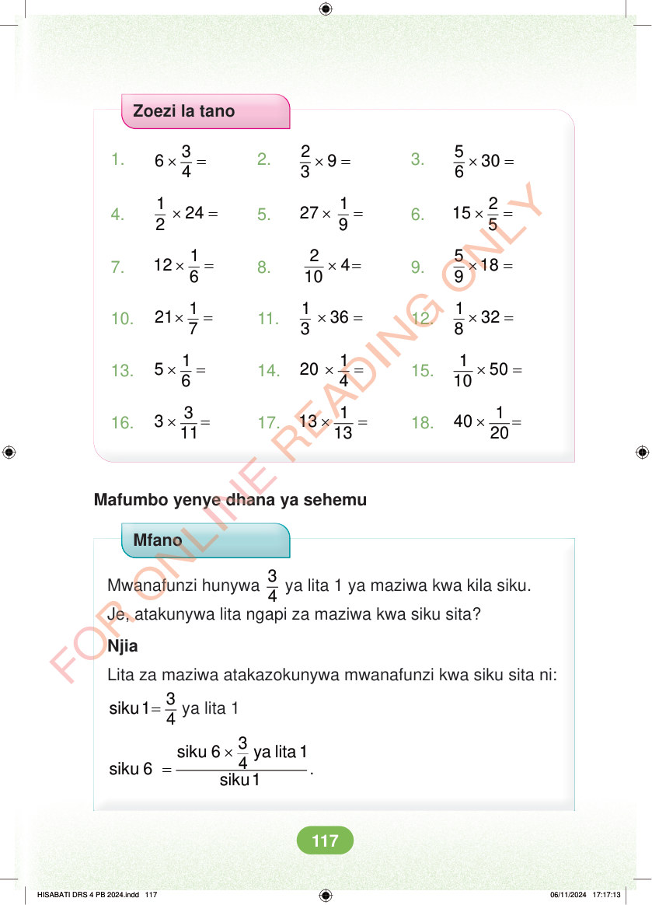

Zoezi la tano 1. × = 3 6 4 2. × = 2 9 3 3. × = 5 30 6 4. × = 1 24 2 5. × = 1 27 9 6. × = 2 15 5 7. × = 1 12 6 8. × = 2 4 10 9. × = 5 18 9 10. × = 1 21 7 11. × = 1 36 3 12. × = 1 32 8 13. × = 1 5 6 14. × = 1 20 4 15. × = 1 50 10 16. × = 3 3 11 17. × = 1 13 13 18. × = 1 40 20 Mafumbo yenye dhana ya sehemu Mfano Mwanafunzi hunywa 3 4 ya lita 1 ya maziwa kwa kila siku. Je, atakunywa lita ngapi za maziwa kwa siku sita? Njia Lita za maziwa atakazokunywa mwanafunzi kwa siku sita ni: = 3 siku 1 4 ya lita 1 3 siku 6 ya lita 1 4 . siku 6 × = siku 1 HISABATI DRS 4 PB 2024.indd 117 HISABATI DRS 4 PB 2024.indd 117 06/11/2024 17:17:13 06/11/2024 17:17:13